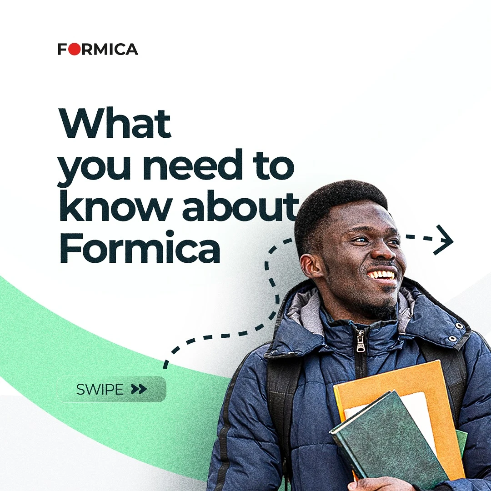

FORMICA AGENCY / EDUCATION & CAREERS
Big ambitions.
Human hooks.
Job hunting is serious. The content doesn’t always have to be.
Explore the work01 / THE AUDIENCE
Ambition meets
real life.
People looking for opportunities bring ambition, uncertainty and very familiar frustrations. Useful content needs to recognise all three.
The job was to build a social presence that could introduce the brand and speak to people in a way that felt relatable.

02 / THE STRATEGY
Give the audience
a reason to care.
I led social strategy, creative content and posting systems, alongside media buying, website updates and analytics.
A brand introduction explains who is behind the message. A familiar moment of job search frustration gives the audience a reason to recognise themselves in it.
03 / THE WORK
We’ve all
been there.
Ghosting, long waits and the awkward silence after an application. This short reel turns the familiar frustration of job hunting into a human hook.
Different formats, with the same audience in mind.
04 / THE RESULT
Attention that
moved people.
Increase in social engagement, reported in my CV, through creative content strategy and consistent posting.
The measurement period, comparison baseline and underlying analytics are not specified in the available portfolio materials.
Read my CV ↗Keep exploring
Invest Africa 54